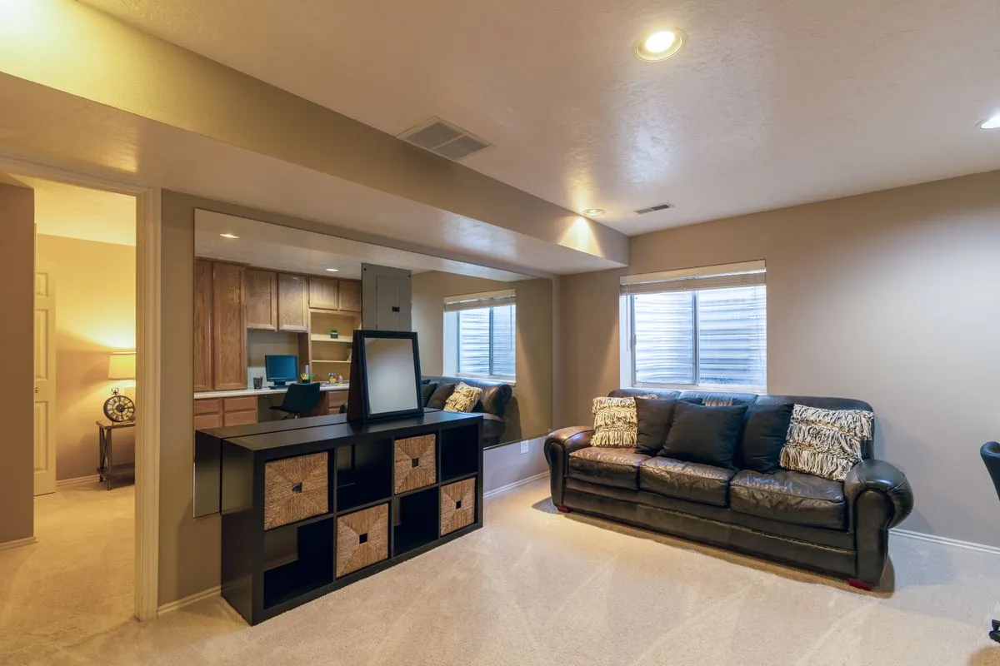

By Reno Rise. Published September 20, 2026. Last updated September 20, 2026. General planning information, not legal or engineering advice.

Vinyl plank or carpet for a basement? It is a fair fight. Carpet wins on warmth and quiet. Vinyl plank wins on how it copes with the odd spill.
But the deciding factor is usually not taste. It is whether the slab underneath stays dry.
This guide compares the two on the things homeowners actually ask about, then suggests where each tends to fit. For the wider field, including tile, laminate and engineered flooring, see the basement flooring page.
General planning information, not engineering advice. Product suitability depends on the manufacturer’s instructions and a professional’s assessment of your slab and moisture conditions. Reno Rise does not install flooring; independent professionals do.
Vinyl plank vs. carpet at a glance
| Vinyl plank | Carpet | |
|---|---|---|
| Comfort | Firm and cool; underlayment or a subfloor helps | Soft and warm underfoot |
| Moisture tolerance | The plank itself does not absorb water like wood; seams, edges and slab moisture still matter | Low: carpet and pad can hold moisture and support mould if damp |
| Sound | Can sound hard or hollow without underlayment | Generally absorbs sound and softens footsteps |
| Maintenance | Sweep, vacuum, damp mop | Regular vacuuming and occasional deeper cleaning |
| After a spill or small leak | Wipe up; check the seams and the slab | Dry quickly, or expect to lift and replace the pad and possibly the carpet |
| Replacement | Damaged planks can sometimes be replaced, depending on the product | Carpet tiles replace piece by piece; broadloom is replaced by area |
| Installation complexity | Low to moderate; needs a flat slab | Low to moderate |
The moisture question decides more than the rest
Health Canada’s guide to moisture and mould suggests you “consider removing any carpets from the basement floor” (Health Canada). That is not a ban. It is a reminder that carpet is the option most affected if the basement gets damp, and basements are where dampness happens.
Vinyl plank is a more forgiving material, but it is not a cure. Seams and edges can still let water reach the slab, and “waterproof” usually describes the plank, not the whole floor. Read the manufacturer’s below-grade terms.
Either way, the same first step applies: find out whether the basement is dry, and fix any source of water. Why waterproofing comes before finishing explains the order.
Where each tends to fit
- Vinyl plank tends to suit family rooms, hallways, entries, rental-style spaces and any area likely to see spills or heavy use.
- Carpet tends to suit a bedroom or media room in a basement that has been shown to stay dry, with humidity kept between 30% and 50% (Health Canada).
- Carpet tiles sit in between: soft underfoot, and a stained tile can be swapped. The backing can still trap moisture.
- Both in one basement is common: vinyl in the entry and the play area, carpet where warmth matters, with a proper transition between them.
Picture a basement with a bedroom, a laundry corner and a games area. Vinyl in the laundry and games area, carpet tiles or a warm underlayment plus vinyl in the bedroom: that is not a rule, just an example of matching material to use rather than picking one floor for everything.
What to ask before you choose
- Has the slab been tested where the product requires it, and can I see the result?
- Does the manufacturer support this product in a basement, and what does the warranty say?
- Would an underlayment or insulated subfloor improve comfort, and how much height does it use?
- How easy is it to repair or replace a damaged area?
The guide to basement subfloors covers the height and comfort trade-offs. If you are planning the whole room, see basement finishing. Reno Rise can review your project details and match your project with the contractor best suited to the work.
Frequently asked questions
Which is warmer in a basement, vinyl plank or carpet?
Carpet feels warmer underfoot. Vinyl plank over an insulated subfloor or a suitable underlayment can narrow the gap, at the cost of some ceiling height.
Which handles a spill or small leak better?
Vinyl plank is generally more forgiving of a spill, though water can still reach the slab through seams. Carpet and pad can hold moisture, so they need to dry quickly or be replaced.
Can I use vinyl plank in one part of the basement and carpet in another?
Yes, it is common. Use a proper transition strip and match each material to how that area is used.
Do carpet tiles change the answer?
They make repairs easier because individual tiles can be replaced. The backing can still trap moisture, though, and tiles do not solve a damp slab. Check the manufacturer’s guidance for below-grade use before you choose them.
Request a Basement Assessment
Share a few details about your basement and your plans. Reno Rise reviews what you send and matches your project with the contractor best suited to the work. This does not confirm an appointment, a quote or an approval.